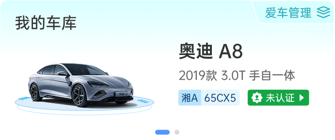
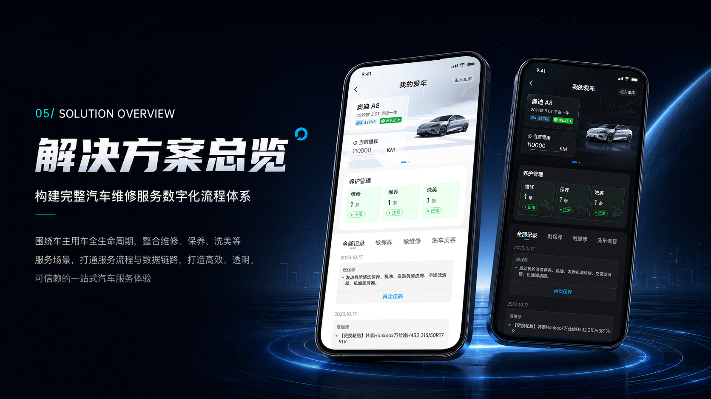
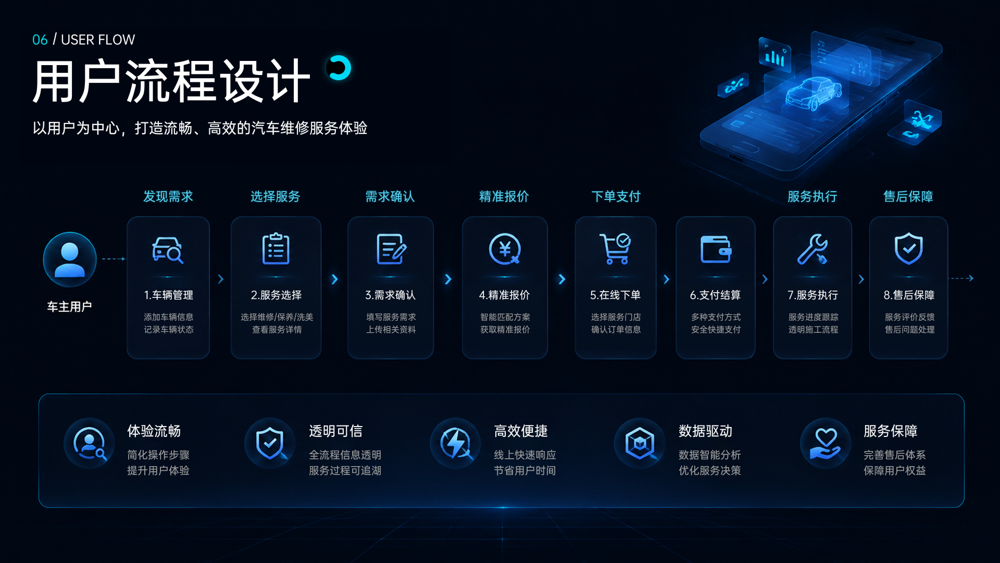
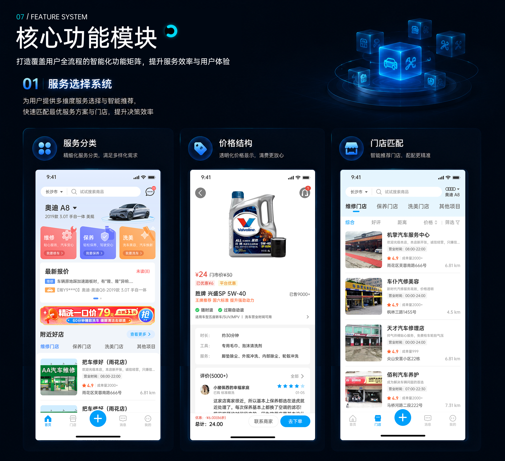
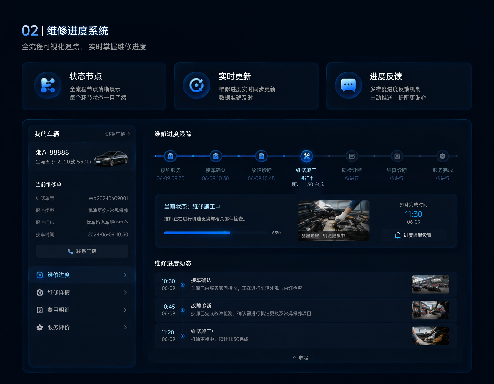
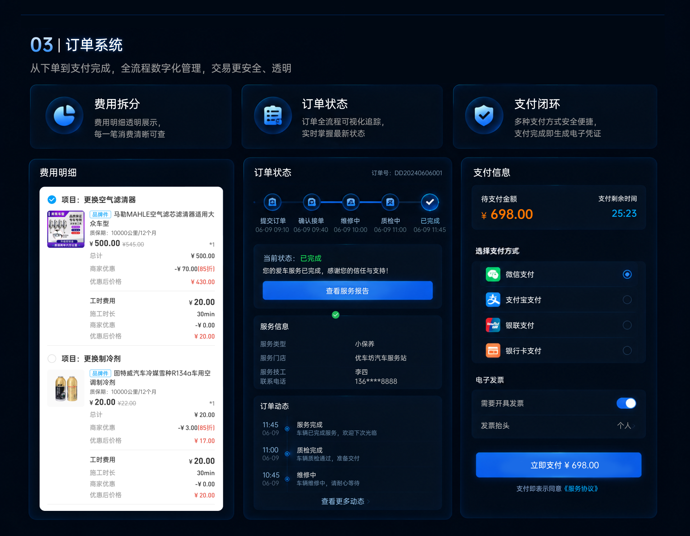
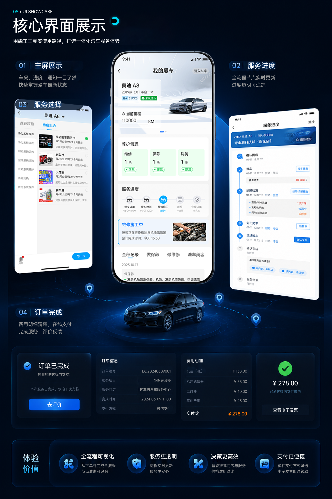
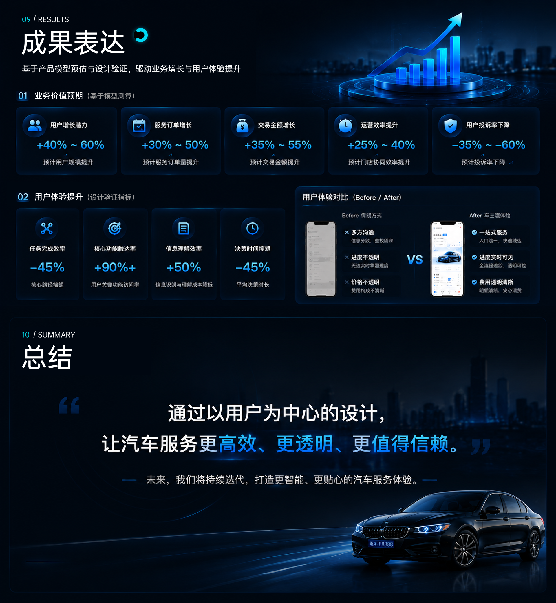

01
服务流程复杂
环节多，步骤繁琐，用户理解成本高

02 / Project Background
汽车维修服务链路长，信息不透明，用户决策成本高
随着汽车保有量的不断增长，用户对维修服务的需求日益提升。传统线下维修模式存在流程复杂、信息不透明、服务不可追踪等问题，导致用户体验差、信任度低、决策成本高。
设计目标 Design Objective
构建标准化、可视化、可追踪的汽车维修服务体系降低用户决策成本
建立用户信任机制
增强服务可控感
提升用户满意度
用户问题 User Pain Points
环节多，步骤繁琐，用户理解成本高
维修项目不清晰，收费不透明，用户担心被乱收费
维修进度无法实时了解，缺乏保障与安心感
03 / Design System
通过统一的设计语言和组件规范，确保产品在多端场景下保持一致的体验，同时提高设计与开发的协作效率。
统一色彩与排版规范
高效复用组件资源
建立设计标准体系
支持业务持续迭代
01 色彩规范
Color System02 字体规范
Typography03 组件规范
Components
04 图标规范
Icon System04 / Design Challenge
在复杂的汽车维修服务场景中，如何通过设计解决用户的核心痛点，构建高效、透明、可信赖的服务体验，是本项目面临的三大核心挑战。
从用户进入到服务完成，如何设计一套清晰、顺畅、可闭环的服务流程体系？
面对复杂的服务项目与价格信息，如何帮助用户快速理解、轻松决策？
维修过程不可见、信息不透明，如何让用户实时掌握进度并建立信任？







